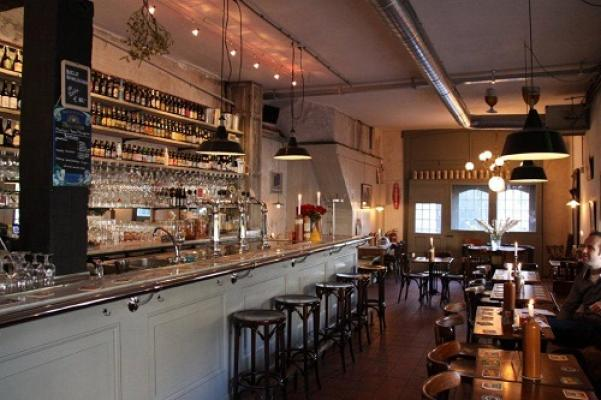
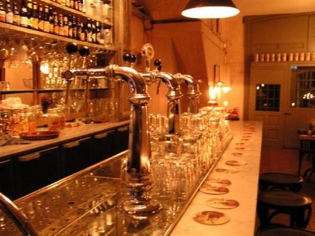
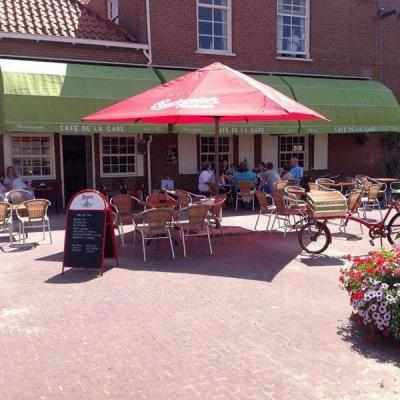
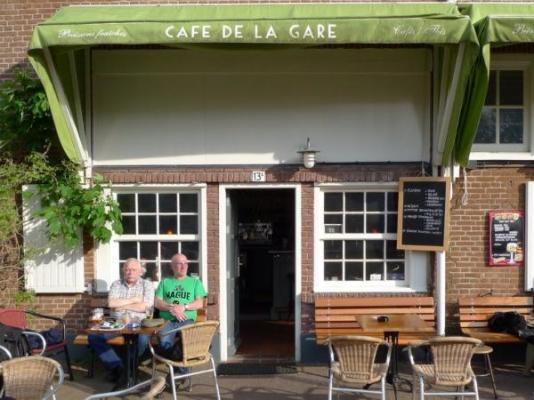
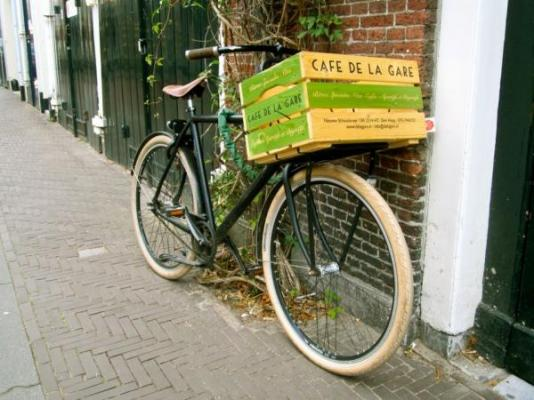
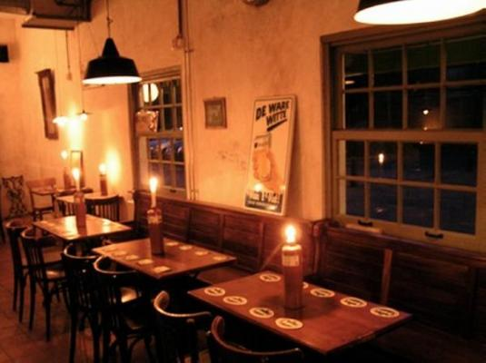

Boissons Fraîches · Bières Spéciales · Vins · Cafés · Apéritifs et Digestifs
Café de la Gare
Een voormalig koetshuis aan een rustig pleintje in de Haagse binnenstad, met een groot zonnig terras. Ruim 180 bieren op fles en 10 tapkranen.



Een koetshuis met een Franse ziel
Aan een rustig pleintje gelegen in de binnenstad van Den Haag is een voormalig koetshuis verbouwd tot een café met een groot zonnig terras.
Bij het inrichten is er een Franse sfeer ontstaan met industriële elementen. De omgeving van het café bestaat uit statige herenhuizen en koetshuizen. Aan het plein waar het café is gevestigd ligt ook Theater Pepijn. Achter het plein is de beroemde Denneweg, een luxe winkelstraat die uitkomt op het Lange Voorhout waaraan het schitterende hotel Des Indes ligt.
Het café biedt een verscheidenheid aan dranken. De ruim 180 bieren op fles en 10 tapkranen zorgen ervoor dat er voor iedereen een bier te vinden is. We hebben ook heerlijke koffie en thee, lekkere wijn, mooie jenevers en whisky's, en de speciale likeuren welke door de Haagse distilleerderij Van Kleef worden gemaakt.
Tot ziens,
Lambert en Mirjam


Bierkaart
Van trappist tot geuze en van stout tot IPA. Kies een soort om de bieren te zien.
Van het vat
Acht vaste tapbieren plus een wisseltap.
- 1× Wisseltap
- Blanche de Namur
- Brand Pilsener
- Jopen Mooie Nel
- La Trappe Blond
- Maredsous 6
- St. Bernardus Prior
- Weihenstephaner Hefeweiss
Flesbier van het moment
Het bier van het moment wisselt regelmatig. Vraag bij uw bezoek om de actuele lijst.
- Achel Bruin
- Achel Tripel
- Chimay Blauw
- Chimay Dorée (Goud)
- Chimay Rood
- Chimay Wit
- La Trappe Blond
- La Trappe Dubbel
- La Trappe Isidór
- La Trappe Quadrupel
- La Trappe Tripel
- Orval
- Rochefort 6
- Rochefort 8
- Rochefort 10
- Westmalle Dubbel
- Westmalle Tripel
- Westvleteren 12
- Zundert Trappist 10
- Zundert Trappist 8
- Bornem Tripel
- Corsendonk Agnus
- Corsendonk Pater
- Guldenberg Tripel
- Maredsous 6
- St. Bernardus Abt
- St. Bernardus Pater
- St. Bernardus Prior
- St. Bernardus Tripel
- St. Feuillien Grand Cru
- St. Feuillien Tripel
- Tongerlo Blond
- Tongerlo Dubbel
- Tongerlo Prior
- Val Dieu Blond
- Val Dieu Brune
- Val Dieu Tripel
- Barbãr Blond
- De la Senne Bruxellensis
- De la Senne Jambe de Bois
- De la Senne Taras Boulba
- De la Senne Zinnebir
- De Ranke XX Bitter
- De Ranke Simplex
- Delirium Tremens
- Duvel
- Gouden Carolus Classic
- Gouden Carolus Tripel
- Hoegaarden Grand Cru
- Hommelbier
- Hopus
- Karmeliet Tripel
- Kwak
- La Chouffe
- La Gauloise Amber
- La Gauloise Blond
- Maximus Pandora
- Moinette Blonde
- Omer Traditioneel Blond
- Saison Dupont
- Strandgaper
- Troubadour Blond
- Troubadour Obscura
- Tynt Meadow
- Vicaris General
- Vicaris Tripel
- Wieze Tripel
- Witkap Stimulo
- Zeezuiper
- Gouden Carolus Hopsinjoor
- IJ I.P.A.
- Jopen Hop zij met ons
- Jopen Mooie Nel
- Maximus High Hops
- Oedipus Polyamorie
- Troubadour Magma
- Troubadour Westkust
- Vd Streek Playground IPA (alcoholarm)
- De la Senne Stouterik
- Jopen Extra Stout
- Oesterstout
- Troubadour Imperial Stout
- Viven Smoked Porter
- Boon Geuze
- Boon Kriek
- Mort Subite Kriek
- Radler
- Duchesse de Bourgogne
- Liefmans Goudenband
- Rodenbach
- Rodenbach Grand Cru
- Brand Pilsener
- Jever
- Jever Fun (alcoholvrij)
- Pilsner Urquell
- Vedett
- Blanche de Namur
- IJ Wit
- Texels Skuumkoppe
- Vedett Extra White
- Weihenstephaner Hefeweiss
- Weihenstephaner Hefeweiss (alcoholvrij)
- Witheer
Drankkaart
Whisky, Haagse jenever en likeur van Van Kleef, wijn, koffie en fris.
Whisky's
- Black Bush
- Bushmills Malt 10 Years
- Caol Ila
- Cragganmore 12 Years
- Famous Grouse
- Four Roses
- Glenfiddich 12 Years
- Jack Daniel's
- Jameson
- Laphroaig 10 Years
- Tullamore Dew
Jenevers
- Blankenheym O.J.
- Coebergh Bessenjenever
- Van Kleef Jonge Jenever
- Van Kleef Oude Jenever
- Van Kleef Ouwe Jonge
Likeuren
- Bailey's
- D.O.M. Bénédictine
- Drambuie
- Grand Marnier Rouge
- Licor 43
- Southern Comfort
- Van Kleef Anijs
- Van Kleef Gember
- Van Kleef Koffie
- Van Kleef Limoen
- Van Kleef Walnoten
Apéritif
- Campari
- Gordon's Dry Gin
- Jopen Gospel Gin
- Martini Bianco
- Martini Rosso
- Ricard Pastis
- Rum Bacardi
- Rum Pampero
- Tanqueray No. 10 Gin
- Tanqueray London Dry Gin
Digestif
- Calvados Trois Lys
- Jägermeister
- Marc de Bourgogne
- Marie Duffau Armagnac
- Tequila José Cuervo
Wijn
- Cabernet Sauvignon
- Cava
- Chardonnay
- Merlot
- Rosé
- Ruby Port
- Sauvignon Blanc
- Viognier
Warme dranken
- Koffie zwart
- Koffie verkeerd
- Cappuccino
- Espresso
- Dubbele espresso
- Thee
- Warme chocolademelk
- Warme chocolademelk met slagroom
- Melk
- Irish Coffee
- French Coffee
- Spanish Coffee
Frisdranken
- Appelsap
- Bitter Lemon
- Cassis
- Chocomel
- Coca-Cola
- Coca-Cola Light
- Fristi
- Ginger Ale
- Lipton Ice Tea
- Perensap
- Seven Up
- Sisi Orange
- Sourcy Blauw
- Sourcy Rood
- Tomatensap
- Tonic
Borrelhapjes
Iets lekkers bij het bier.

Hapjes
- Kaas
- Camembert
- Chorizo
- Salami
- Gekookte worst
- Leverworst
- Rillette
- Mix van hapjes
- Pittige gehaktballetjes 6 · 9 · 12 · 18 stuks
- Mandje stokbrood
- Mandje stokbrood met olie en zout
Schaaltjes
- Borrelnoten
- Cashewnoten
- Gemengde noten
- Japanse mix
- Katjang pedis
- Olijven
- Pinda's
Foto's
Het terras op het plein, de bar en de zaal. Tik op een foto om hem groter te zien.
Bezoek
Nieuwe Schoolstraat 13a2514 HT Den Haag
Aan het plein van Theater Pepijn, vlak bij de Denneweg.
| Maandag | gesloten |
|---|---|
| Dinsdag | 17:00 – 24:00 |
| Woensdag | 17:00 – 24:00 |
| Donderdag | 17:00 – 01:00 |
| Vrijdag | 16:00 – 01:30 |
| Zaterdag | 16:00 – 01:30 |
| Zondag | 16:00 – 24:00 |